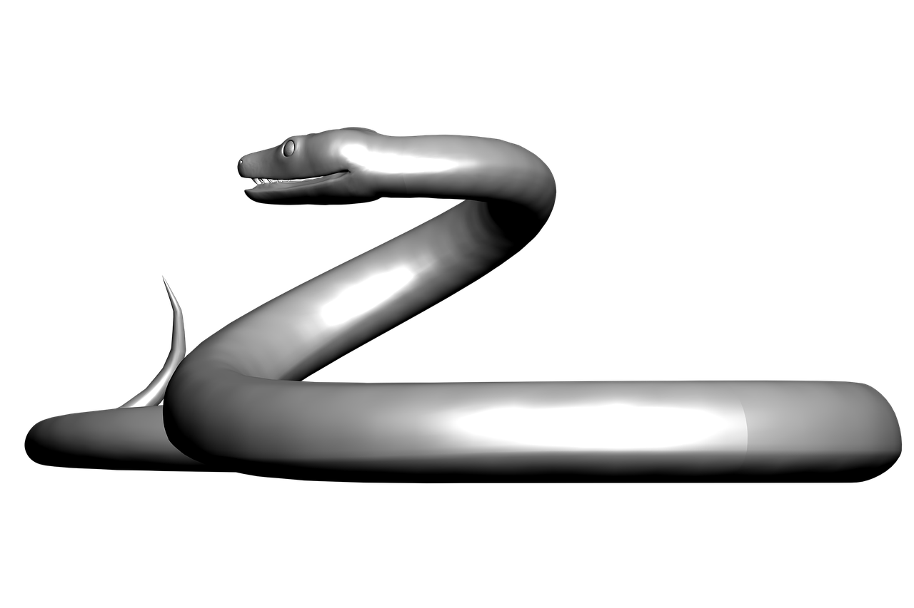

SNnake
ThePortfolio
Intelligente & charger en bas

Oportunum est, ut arbitror, explanare nunc causam, quae ad exitium praecipitem Aginatium inpulit iam inde a priscis maioribus nobilem, ut locuta est pertinacior fama. nec enim super hoc ulla documentorum rata est fides. Hanc regionem praestitutis celebritati diebus invadere parans dux ante edictus per solitudines Aboraeque amnis herbidas ripas, suorum indicio proditus, qui admissi flagitii metu exagitati ad praesidia descivere Romana. absque ullo egressus effectu deinde tabescebat immobilis.